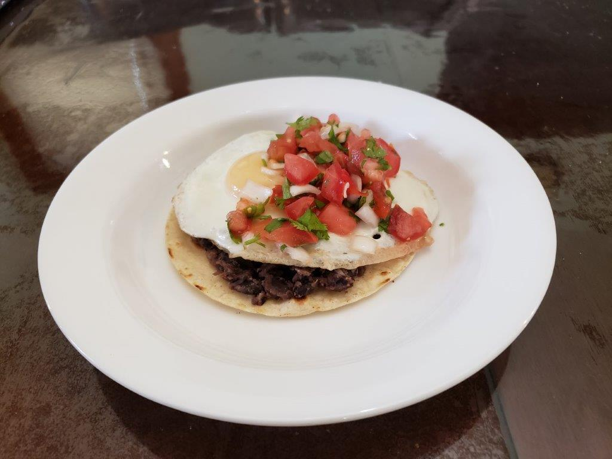

Huevos Rancheros

Ingredients:
Instructions:
- In a small pan over medium heat, warm each tortilla individually, flipping as necessary. Spread the refried beans over each tortilla and place each tortilla on an individual plate. Set aside.
- In the same pan over medium heat, melt the butter. Carefully crack an egg and pour it into the pan without breaking the yolk. Fry the egg, lifting and tilting the pan occasionally to redistribute the butter, until the whites are set and the yolk is cooked to your preferred level of doneness. Place the fried egg on top of a prepared tortilla and repeat with the remaining eggs.
- Spoon about one-fourth of the warmed salsa roja across each dish, avoiding the egg yolk. Then do same with the pico de gallo. Sprinkle with freshly ground black pepper and add any additional garnishes you might like.